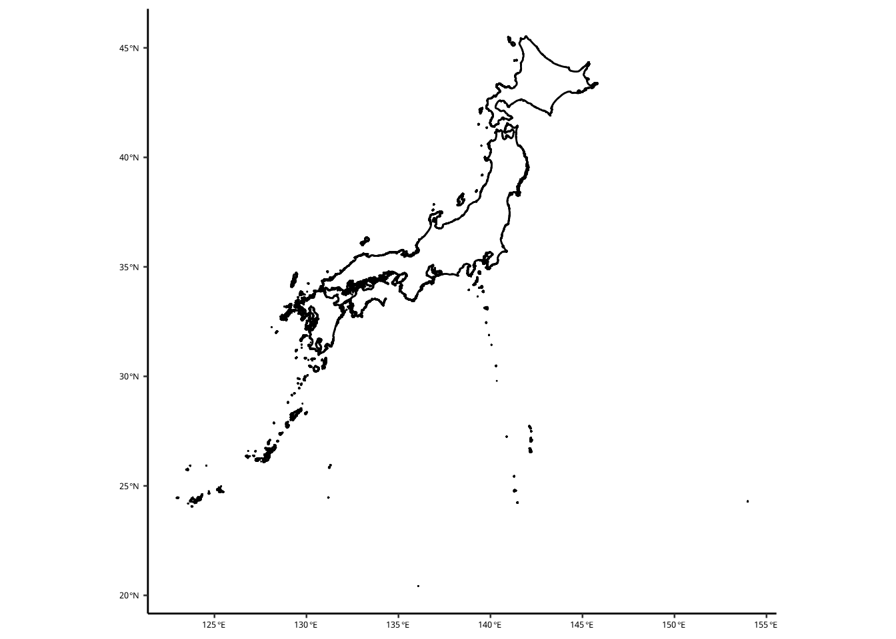
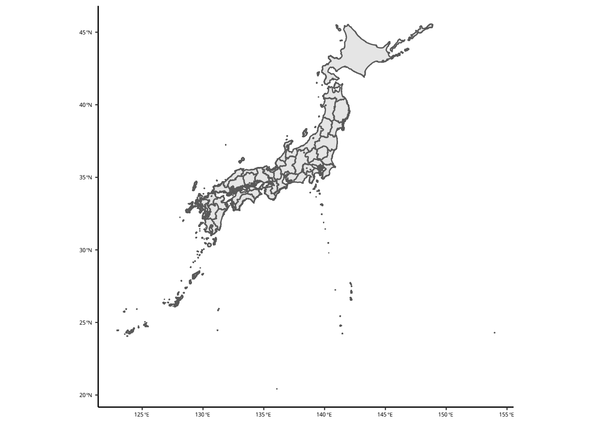
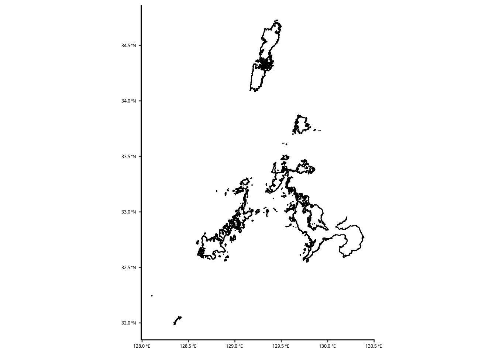
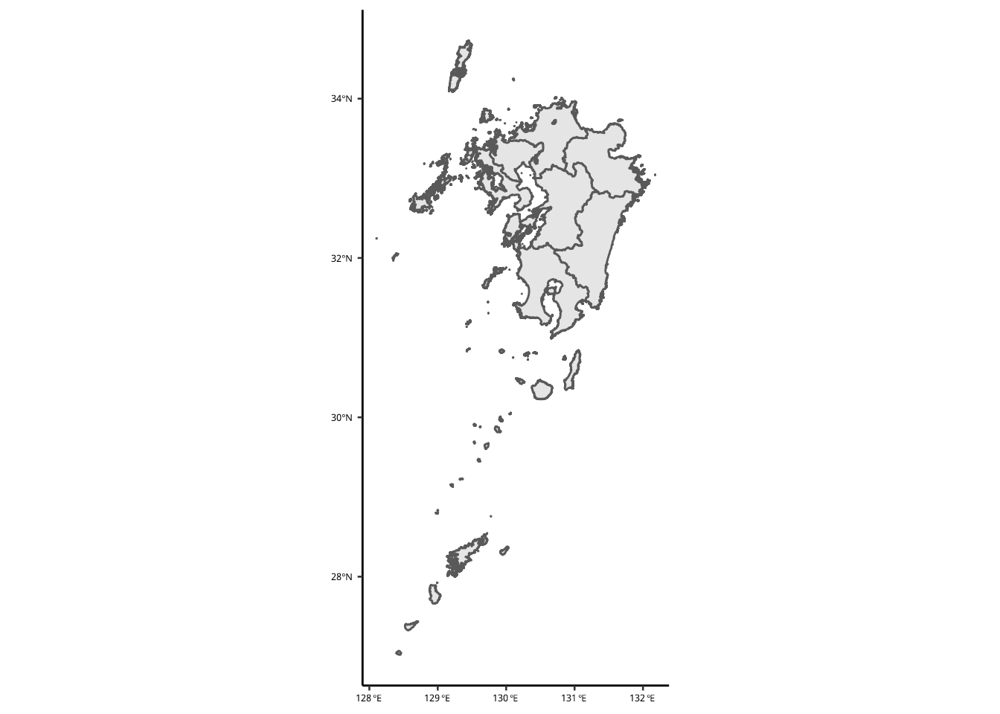
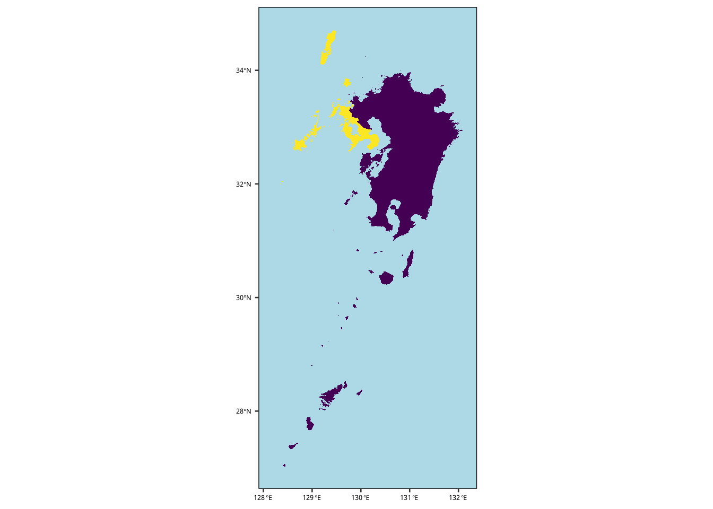
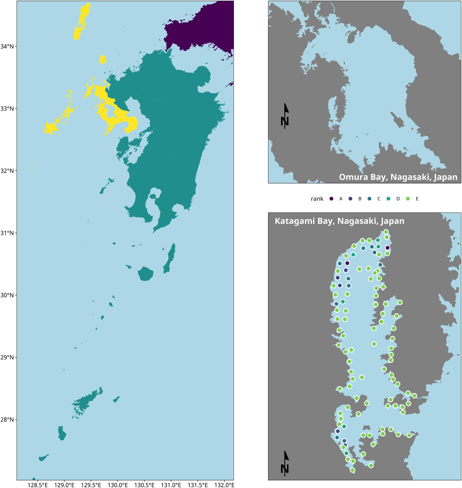

地図の作り方
必要なパッケージ
library(tidyverse) # Essential package── Attaching packages ─────────────────────────────────────── tidyverse 1.3.2 ──
✔ ggplot2 3.3.6 ✔ purrr 0.3.4
✔ tibble 3.1.8 ✔ dplyr 1.0.10
✔ tidyr 1.2.0 ✔ stringr 1.4.0
✔ readr 2.1.2 ✔ forcats 0.5.1
── Conflicts ────────────────────────────────────────── tidyverse_conflicts() ──
✖ dplyr::filter() masks stats::filter()
✖ dplyr::lag() masks stats::lag()library(ggpubr) # Publication-oriented figures
library(kableExtra) # Tables
Attaching package: 'kableExtra'
The following object is masked from 'package:dplyr':
group_rowslibrary(magick) # Imagemagick R APILinking to ImageMagick 6.9.11.60
Enabled features: fontconfig, freetype, fftw, heic, lcms, pango, webp, x11
Disabled features: cairo, ghostscript, raw, rsvg
Using 32 threadslibrary(patchwork) # Simplified figure tiling
library(showtext) # I want to use google fonts in the figuresLoading required package: sysfonts
Loading required package: showtextdb次の2つは地図専用のパッケージです。
library(ggspatial) # Essential for map-making with ggplot
library(sf) # Essential for map data manipulationLinking to GEOS 3.9.0, GDAL 3.2.2, PROJ 7.2.1; sf_use_s2() is TRUENoto Sans のフォントが好きなので、ここで Google Fonts からアクセスします。
font_add_google("Noto Sans","notosans")ggplot のデフォルトテーマも設定し、フォント埋め込みも可能にします。 ここでデフォルトを設定すると、毎回 theme_pubr() を ggplotのチェインにたさなくていい。
theme_pubr(base_size = 10, base_family = "notosans") |> theme_set()
showtext_auto() # Automatically embed the Noto Sans fonts into the ggplots.シェープファイルの読み込み
シェープファイル (shapefile) は地図データのことです。 基本的の拡張子は shp, shx, dbf ですが、その他に prj と xml もあります。
研究室用にダウンロードした 国土交通省・国土数値情報ダウンロードサービス のシェープファイルは ~/Lab_Data/Japan_map_data/Japan に入っています。
mlit = read_sf("~/Lab_Data/Japan_map_data/Japan/N03-20210101_GML/")mlit に読み込んだシェープファイルはここへ。
シェープファイルの 座標参照系 (CRS: Coordinate Reference System) を確認しましょう。
st_crs(mlit)Coordinate Reference System:
User input: JGD2011
wkt:
GEOGCRS["JGD2011",
DATUM["Japanese Geodetic Datum 2011",
ELLIPSOID["GRS 1980",6378137,298.257222101,
LENGTHUNIT["metre",1]]],
PRIMEM["Greenwich",0,
ANGLEUNIT["degree",0.0174532925199433]],
CS[ellipsoidal,2],
AXIS["geodetic latitude (Lat)",north,
ORDER[1],
ANGLEUNIT["degree",0.0174532925199433]],
AXIS["geodetic longitude (Lon)",east,
ORDER[2],
ANGLEUNIT["degree",0.0174532925199433]],
USAGE[
SCOPE["Horizontal component of 3D system."],
AREA["Japan - onshore and offshore."],
BBOX[17.09,122.38,46.05,157.65]],
ID["EPSG",6668]]CRSには 地理座標系 と 投影座標系 の2種類があります。 座標系にはEPSGコードもつけられています。
# HTML 用テーブル
tibble(`EPSG Code` = c(4326,6668,6677),
`CRS` = c("WGS84", "JGD2011", "JGD2011 / Japan Plane Rectangular CS IX"),
`Units` = c("degrees", "degrees", "meters")) |>
kbl() |>
kable_styling(bootstrap_options = c("hover"))| EPSG Code | CRS | Units |
|---|---|---|
| 4326 | WGS84 | degrees |
| 6668 | JGD2011 | degrees |
| 6677 | JGD2011 / Japan Plane Rectangular CS IX | meters |
このデータは政策区域のデータなので、とても重いです。 まずは、都道府県ごとにまとめた RDS ファイルを作って保存します。 都道府県ごとに st_union() を使って polgyon データを結合します。 結合したデータを unnest して、simple feature に戻してかた保存します。 121158 features もあるので、数時間もかります。
沿岸のデータだけなら軽いですので、C23 シリーズのファイルを読み込みます。
mlit = tibble(folder = dir("~/Lab_Data/Japan_map_data/Coastline/", full = TRUE)) |>
mutate(data = map(folder, read_sf)) |> select(data) |>
unnest(data) |>
st_as_sf(crs = st_crs(6668))では、ここで地図の確認をします。
mlit |> ggplot() + geom_sf()
mlit のデータは細かい政策区域まで分けられているので、全国スケールの図には向いていません。 st_union() をつかって、都道府県ごとに polygon を結合したファイルは、~/Lab_Data/Japan_map_data/Japan/todofuken.rds に保存しています。 次のコードで、都道府県ごとにまとめましたが、並列処理でも５時間以上もかかったので、RDS ファイルを使いましょう。
# Takes 5.5 hours to complete with 30 cores!
# library(furrr)
# plan(multisession, workers = 30)
# Group by prefecture
# mlit1 = mlit |> group_nest(N03_001) |>
# # mutate(data = future_map(data, st_union)) |>
# unnest(data) |> st_as_sf()
# mlit1 |> write_rds("~/Lab_Data/Japan_map_data/Japan/todofuken.rds")mlit1 = read_rds("~/Lab_Data/Japan_map_data/Japan/todofuken.rds")mlit1 |> ggplot() + geom_sf()
調査地点のデータを準備する
形上湾アマモ場調査のステーションの GPS tibble を準備する。
zostera = read_csv("~/Lab_Data/matsumuro/Katagami_Bay/longlat_info.csv")Rows: 105 Columns: 6
── Column specification ────────────────────────────────────────────────────────
Delimiter: ","
chr (1): eelgrass
dbl (4): Name, lat, long, coverage(%)
dttm (1): datetime
ℹ Use `spec()` to retrieve the full column specification for this data.
ℹ Specify the column types or set `show_col_types = FALSE` to quiet this message.zostera |> print(n = 3)# A tibble: 105 × 6
Name lat long datetime eelgrass `coverage(%)`
<dbl> <dbl> <dbl> <dttm> <chr> <dbl>
1 1 33.0 130. 2021-05-25 09:14:48 absent 0
2 2 33.0 130. 2021-05-25 09:30:32 absent 0
3 3 33.0 130. 2021-05-25 09:37:16 present 5
# … with 102 more rowszostera に緯度経度を設定する。 CRS は mlit と同じにします。
zostera = zostera |> st_as_sf(coords = c("long", "lat"), crs = st_crs(mlit))
zostera |> print(n = 3)Simple feature collection with 105 features and 4 fields
Geometry type: POINT
Dimension: XY
Bounding box: xmin: 129.7845 ymin: 32.90032 xmax: 129.806 ymax: 32.95375
Geodetic CRS: JGD2011
# A tibble: 105 × 5
Name datetime eelgrass `coverage(%)` geometry
* <dbl> <dttm> <chr> <dbl> <POINT [°]>
1 1 2021-05-25 09:14:48 absent 0 (129.7985 32.95375)
2 2 2021-05-25 09:30:32 absent 0 (129.7987 32.95258)
3 3 2021-05-25 09:37:16 present 5 (129.7963 32.9519)
# … with 102 more rows九州データの抽出
九州のデータと長崎のデータを抽出します。 重要：長崎の名前が誤っています。Nagasaki のはずが、Naoasaki として記録されています。
toget = "長崎|福岡|大分|佐賀|熊本|鹿児島|宮崎"
kyushu = mlit1 |> filter(str_detect(N03_001, toget))海岸線のデータ (mlit) から長崎の情報を抽出したいが、このデータの位置情報はコードで記述されています。
admincode = readxl::read_xlsx("~/Lab_Data/Japan_map_data/AdminiBoundary_CD.xlsx", skip = 2)
admincode = admincode |> select(code = matches("行政"), N03_001 = matches("都道府県*.*漢字"))
codes = admincode |> filter(str_detect(N03_001, "長崎")) |> pull(code)nagasaki = mlit |> filter(str_detect(C23_001, str_c(codes, collapse = "|"))) 長崎の海岸線は次のようになります。
ggplot() + geom_sf(data = nagasaki)
九州は mlit1 から抽出したので、都道府県政策区域として作図されます。
ggplot() + geom_sf(data = kyushu)
長崎をハイライトしましょう。
kyushu |>
mutate(fillme = str_detect(N03_001, "長崎")) |>
ggplot() + geom_sf(aes(fill = fillme), color = NA) +
guides(fill = "none") +
scale_fill_viridis_d() +
theme(panel.background = element_rect(fill = "lightblue", color = "black"),
axis.line = element_blank())
この図には、違和感を感じるので、山口、島根、愛媛、広島と高知も追加します。 そしれ、最初に作った kyushu の範囲を抽出しておきます。
kbbox = kyushu |> st_bbox()toget = "長崎|福岡|大分|佐賀|熊本|鹿児島|宮崎|山口|島根|愛媛|高知|広島"
kyushu = mlit1 |> filter(str_detect(N03_001, toget))長崎、九州、その他の色分けをして、 kyushu をクロップします。 クロップ範囲は kbbox です。
kyushu = kyushu |>
mutate(fillme = case_when(str_detect(N03_001, "長崎") ~ "Nagasaki",
str_detect(N03_001, "福岡|大分|佐賀|熊本|鹿児島|宮崎") ~ "Kyushu",
TRUE ~ "Honshu")) |>
st_crop(kbbox)Warning: attribute variables are assumed to be spatially constant throughout all
geometriesこの地図は次のようになりました。
ggplot(kyushu) +
geom_sf(aes(fill = fillme), color = NA) +
guides(fill = "none") +
coord_sf(expand = FALSE) +
scale_fill_viridis_d() +
theme(panel.background = element_rect(fill = "lightblue", color = "black"),
axis.line = element_blank())
調査地点の図
形上湾と大村湾の図を作ります。 形上湾の方には、調査地点と結果ものせます。 まずは形上湾と大村湾の範囲を決めます。 範囲は Google Map で選びました。
katagami = rbind(c(32.95809069048365, 129.7669185309373),
c(32.89802000729197, 129.82832411747583)) |>
as_tibble(.name_repair = ~c("lat", "long")) |>
st_as_sf(coords = c("long", "lat"), crs = st_crs(kyushu))
omurabay = rbind(rev(c(33.103196388120104, 129.67183787501082)),
rev(c(32.817013859622804, 130.03298144413574))) |>
as_tibble(.name_repair = \(x) c("long", "lat")) |>
st_as_sf(coords = c("long", "lat"), crs = st_crs(kyushu))ここで、それぞれの湾のデータを kyushu からぬきます。
omurabay_area = kyushu |> filter(str_detect(N03_001, "長崎")) |> st_crop(st_bbox(omurabay)) Warning: attribute variables are assumed to be spatially constant throughout all
geometrieskatagami_area = kyushu |> filter(str_detect(N03_001, "長崎")) |> st_crop(st_bbox(katagami)) Warning: attribute variables are assumed to be spatially constant throughout all
geometriesアマモの被度データの simple features データを準備します。
zostera = zostera |>
st_as_sf(coords = c("long", "lat"), crs = st_crs(kyushu)) |>
rename(coverage = matches("cover")) |>
mutate(rank = cut(coverage,
c(-Inf, 1, 10, 40, 70, Inf),
labels = c("E", "D", "C", "B", "A"))) |>
mutate(rank = factor(rank,
levels = LETTERS[1:5],
labels = LETTERS[1:5]))九州の図を先につくります。
# The main plot of kyushu
pmain = ggplot(kyushu) +
geom_sf(aes(fill = fillme), color = NA) +
guides(fill = "none") +
coord_sf(expand = FALSE) +
scale_fill_viridis_d() +
theme(panel.grid = element_blank(),
panel.background = element_rect(fill = "lightblue", color ="black"),
panel.border = element_rect(fill = NA, color ="black"),
plot.background = element_rect(fill = NA, color =NA),
axis.title = element_blank(),
axis.line = element_blank())大村湾と形上湾の図を次に作りますが、先にラベルの tibble を準備します。 tibble の long と lat のデータは試行錯誤で来ました。 もっといい方法はあるはずです。
# Build plots for Omura Bay and Katagami Bay.
tmp1 = omurabay_area |> st_transform(crs = st_crs(6677)) |> st_bbox()
tmp2 = katagami_area |> st_transform(crs = st_crs(6677)) |> st_bbox()
# tibble for labeling figures. The long and lat are by trial-and-error.
# Need to find a better method.
label1 = tibble(long = tmp1[3] -2500,
lat = tmp1[2] +1700,
label = "Omura Bay, Nagasaki, Japan") |>
st_as_sf(coords = c("long", "lat"), crs = st_crs(6677), agr = "constant") |>
st_transform(crs = st_crs(omurabay_area))
label2 = tibble(long = tmp2[1] +800,
lat = tmp2[4] -150,
label = "Katagami Bay, Nagasaki, Japan") |>
st_as_sf(coords = c("long", "lat"), crs = st_crs(6677), agr = "constant") |>
st_transform(crs = st_crs(omurabay_area))では、大村湾と形上湾の地図をつくります。
pomura = ggplot() +
geom_sf(fill = "grey50", data = omurabay_area, size = 0) +
geom_sf_text(aes(label = label),
data = label1,
color = "white",
family = "notosans",
fontface = "bold",
vjust = 1, hjust = 1,
size = 5) +
coord_sf(expand = FALSE) +
annotation_north_arrow(style = north_arrow_minimal(text_family = "notosans",
text_face = "bold",
line_width = 2,
text_size = 20),
pad_y = unit(0.3, "npc")) +
theme(panel.background = element_rect(fill = "lightblue", color ="black"),
panel.border = element_rect(fill = NA, color ="black"),
plot.background = element_rect(fill = "white", color =NA),
axis.title = element_blank(),
axis.line = element_blank(),
axis.text = element_blank(),
axis.ticks = element_blank())
pkatagami = ggplot() +
geom_sf(fill = "grey50", data = katagami_area, size = 0) +
geom_sf(aes(fill = rank), data = zostera,
pch = 21, size = 3,
color = "white", stroke = 1) +
geom_sf_text(aes(label = label),
data = label2,
color = "white",
family = "notosans",
fontface = "bold",
vjust = 1.0, hjust = 0.0,
size = 5) +
annotation_north_arrow(style = north_arrow_minimal(text_family = "notosans",
text_face = "bold",
line_width = 2,
text_size = 20)) +
coord_sf(expand = FALSE, crs = st_crs(katagami_area)) +
scale_fill_viridis_d(end = 0.8) +
theme(panel.grid = element_blank(),
panel.background = element_rect(fill = "lightblue", color ="black"),
panel.border = element_rect(fill = NA, color ="black"),
plot.background = element_rect(fill = "white", color =NA),
axis.title = element_blank(),
axis.line = element_blank(),
axis.text = element_blank(),
axis.ticks = element_blank())patchwork のパッケージをつかって、図を組み立てます。 図は PDF に保存したら、magick を使って、PNGにも変換します。
pout = pmain + (pomura / pkatagami)
pdfname = "Images/katagami-map-v1.pdf"
pngname = str_replace(pdfname, "pdf", "png")
ggsave(pdfname, plot= pout, width = 300, height = 300, units = "mm")
image_read_pdf(pdfname, density = 600) |> image_trim() |> image_border(color = "white") |> image_write(pngname)Warning in st_point_on_surface.sfc(sf::st_zm(x)): st_point_on_surface may not
give correct results for longitude/latitude data
Warning in st_point_on_surface.sfc(sf::st_zm(x)): st_point_on_surface may not
give correct results for longitude/latitude data